Japan / Ibaraki / Hitachiomiya
Hitachiomiya, Ibaraki: things to do, food and stays
Hitachiomiya · Ibaraki
Hitachiomiya
Highlighted on the Ibaraki map.

Stay
ホテルカメヤ
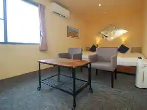
Hotel Kameya
Hotel in Kamimurata, Hitachiomiya with business travelers.
静ヒルズホテル
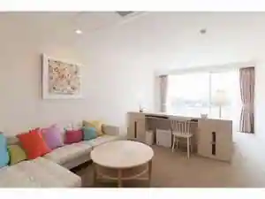
Sei Hiruzu Hotel
奥久慈の旬食材・地産池消を食す宿 鮎の里 ホテル鮎亭
Oku Kuji No Jun Shokuzai Chisan Ike Sho Wo Shokusu Yado Ayu No Sato Hotel Ayu Tei
割烹旅館かめや
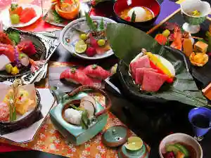
Kappo Ryokan Kameya
里山で過ごすひととき 湯の澤鉱泉
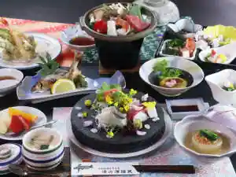
Satoyama De Sugo Suhitotoki Yu No Sawa Kosen
Inn at Imakoso Onsen in Yamakata, Hitachiomiya with a quiet countryside setting.
ボボスリゾートホテル
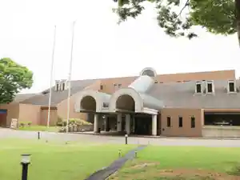
Bobosu Resort Hotel
ザランタンひたち大宮・パークアルカディア
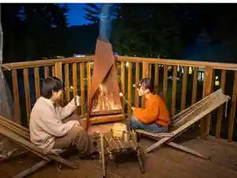
Zarantan Hitachi Omiya Park Arukadia
四季の湯宿 梅屋山荘
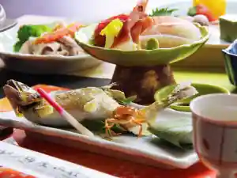
Shiki No Yuyado Umeya Sanso
やすらぎの里公園ケビン
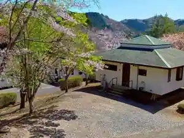
Yasuragino Sato Koen Kebin
Inn in Kobune, Hitachiomiya with a quiet countryside setting.
Dining
YOSHIKI FUJI
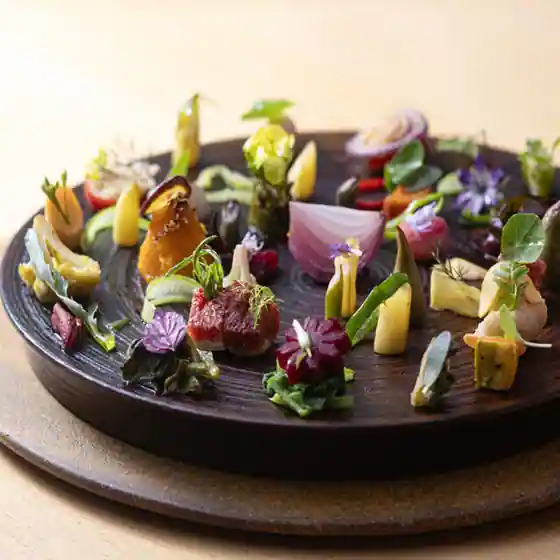
YOSHIKI FUJI
満景
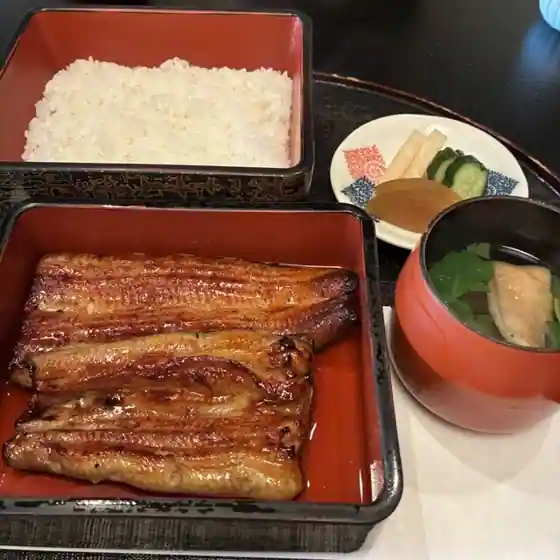
Man Kei
そば道場 久慈川 翁
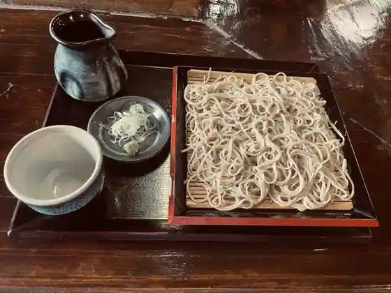
Soba Dojo Kuji Kawa Okina
お菓子処 ふるさわ
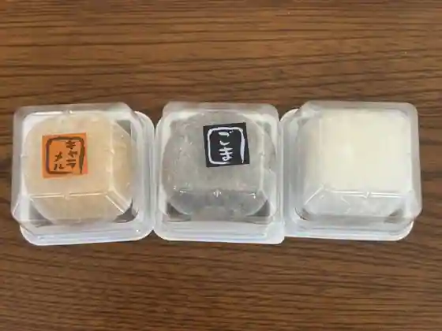
O Kashi Tokoro Furusawa
レストラン 蔵人
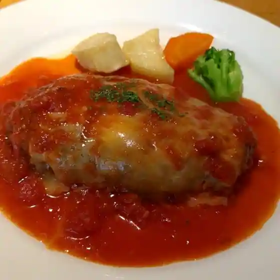
Restaurant Kurabito
そば屋 竹辰
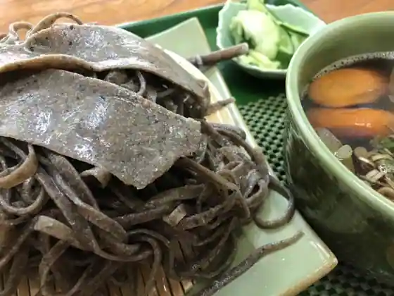
Soba Ya Take Tatsu
そばや 麦藁
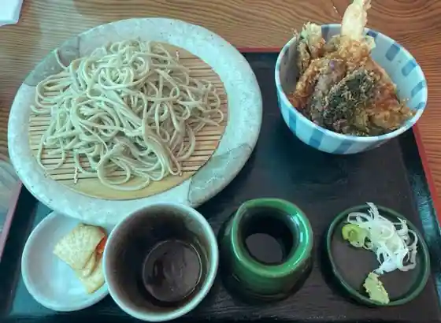
Sobaya Mugiwara
ジェラート＆スムージー
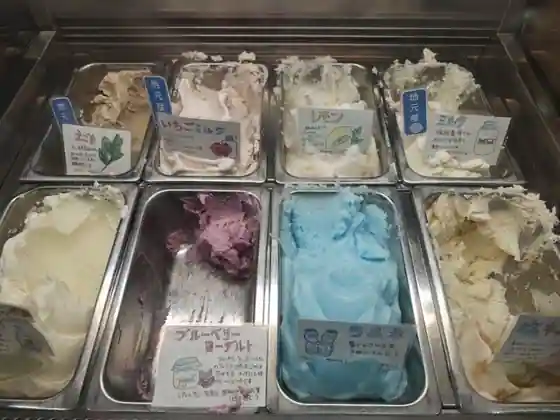
Jierato & Sumuji
三乃宮
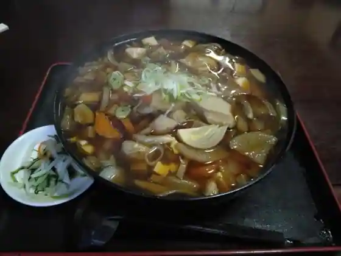
San No Miya
レストラン 常陸亭
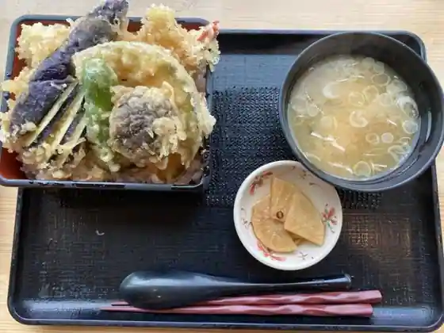
Restaurant Hitachi Tei
レストラン北斗庵
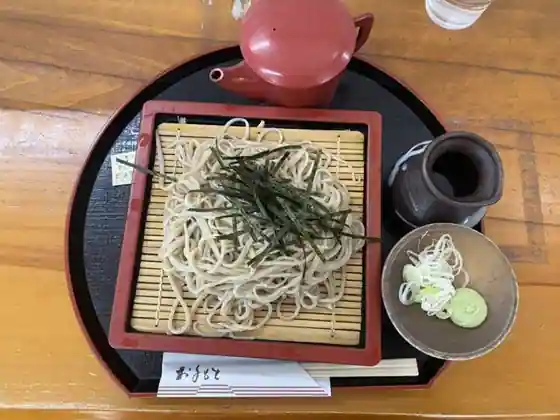
Restaurant Hokuto Iori
フライパン
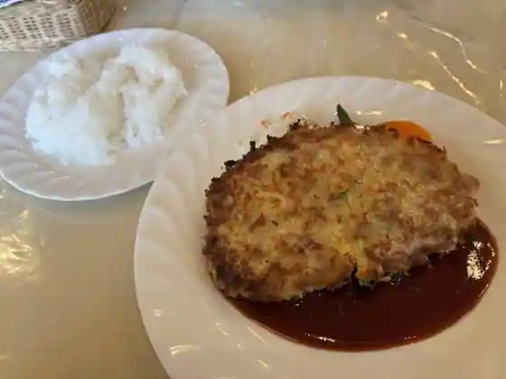
Furai Bakery
瑞穂牛キッチン カウカウ
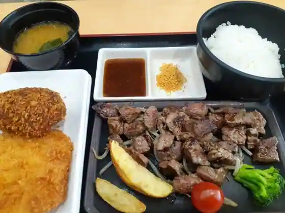
Mizuho Ushi Kitchen Kaukau
静ヒルズカントリークラブ レストラン
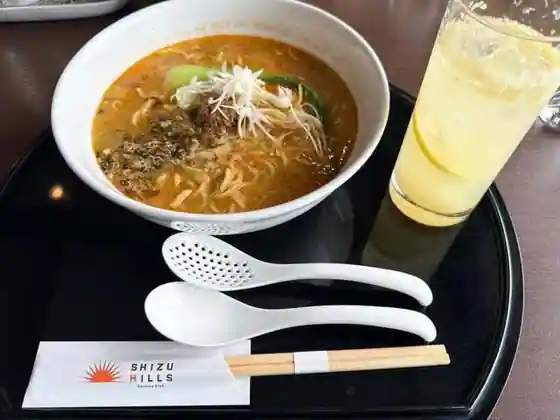
Sei Hiruzukantorikurabu Restaurant
道の駅 常陸大宮 かわプラザ
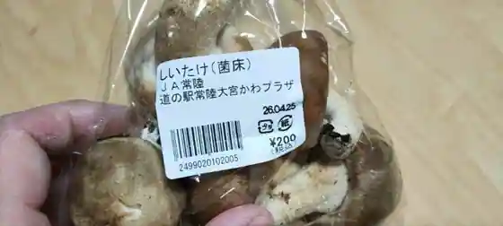
Michi No Eki Hitachiomiya Kawa Plaza
福田屋
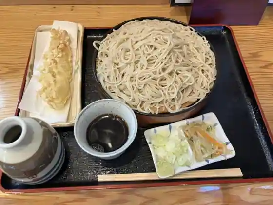
Fukuda Ya
中国飯店
Chugoku Meshi
塩子屋食堂
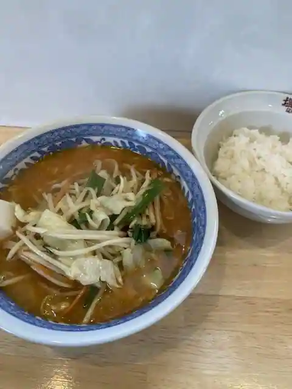
Shiogo Ya Shokudo
湯の澤鑛泉
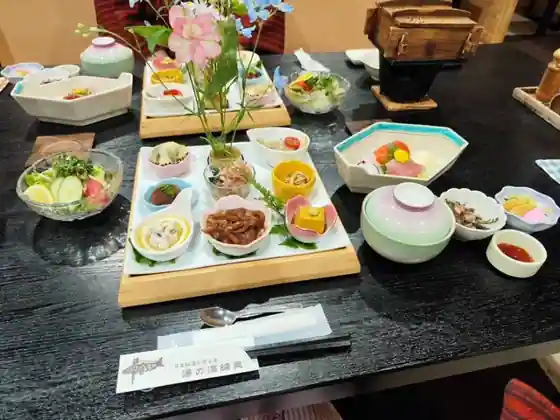
Yu No Sawa Kosen
よしだや
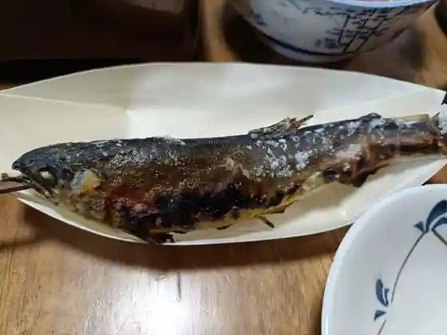
Yoshidaya
麺屋げんき
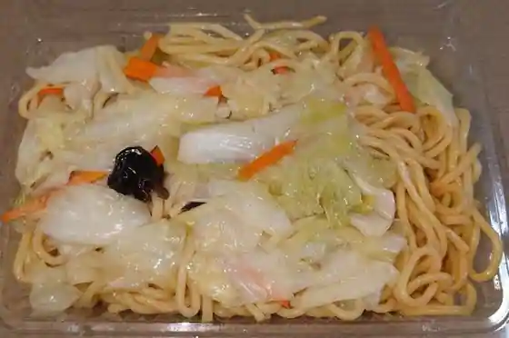
Men Ya Genki
美和亭
Miwa Tei
蕎麦のうか しの田
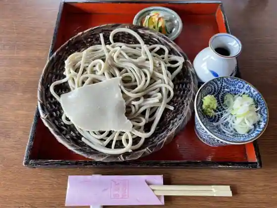
Soba Noka Shino Ta
ラーメンショップ 御前山店
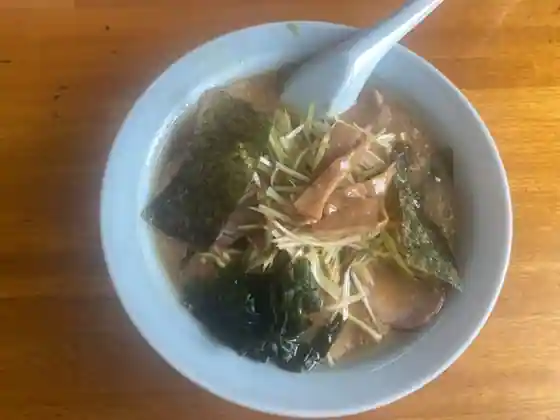
Ramen Shoppu Gozenyama
Sights
Washi Koyama Ue Shrine (Tori no Kosanjojinja)
Tatsu no Kuchi Shinsui Park

Zarantan Hitachi Omiya

MARUTA Hitachi Omiya

Miwa ★ Furusato Kan Hokutosei (Roadside Station (Miwa))

Yu no Sawa Kosen
PICNIC BASE Hitachi Omiya
Gozenyama Onsen Hoyo Center Shiki Sai Kan
Yamagatasukoyaka Land Santa Baths
Sasa Baths
Gozenyama Seishonen Ryoko Village
Kami no Sato Nishi no Nai Washi Museum
Storm Field Guide Sutomufiirudogaido
Roadside Station Hitachiomiya ~ Kawa Plaza ~
San O Yama Nature Park
Kago Iwa
Shiki no Yuyado Umeya Sanso
Kyanpingu Garden Iekazu Raku
Fudo Taki
Yasuragi no Sato Park
Ogawa Bussan Center Kazaguruma
Yoshida Hachiman Shrine Miura Sugi
Maru Makoto Shokuhin Fune Natto
Kyujo Lookout
Nature Noho Orchard Aiai Farm
O Kashi Tokoro
Resutoran Kurabito
Ohisama no Ichigo Sono
O Shiro Lookout (Mijotembodai)
Yakiniku Agyo
JA Ibaraki Midori Guriinhausu Omiya
Ichigo BOX
Soba Shoshi Nsui Iori
Naka Kantorii Kurabu
Konpon Shuzo
Hitachi Farm
Gofukuya
Tsuzuku Farm
Manpuku Tera Cherry Blossoms
Azareakantorii Club